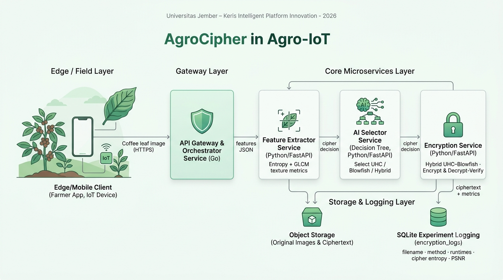

Research Prototype · TRL 3 Microservices Purwarupa Riset · Arsitektur Microservices TKT 3
AgroCipher: AI Orchestrated Hybrid Image Encryption for Coffee Leaf Disease AgroCipher: Orkestrasi AI untuk Enkripsi Citra Daun Kopi secara Adaptif
This homepage presents the research prototype of a microservices-based platform that orchestrates AI Selector to choose the most suitable cipher (UHC, Blowfish, or Hybrid UHC–Blowfish) for coffee leaf images in an Agro-IoT ecosystem. Halaman ini menampilkan purwarupa riset platform berbasis microservices yang mengorkestrasi AI Selector untuk memilih algoritma sandi paling sesuai (UHC, Blowfish, atau Hybrid UHC–Blowfish) bagi citra daun kopi dalam ekosistem Agro-IoT.
- AI-driven decision tree selects the cipher based on entropy and GLCM texture metrics. Pohon keputusan berbasis AI memilih algoritma sandi berdasarkan nilai entropi dan metrik tekstur GLCM.
- Microservices architecture: Gateway, Feature Extractor, AI Selector, and Encryption Service. Arsitektur microservices: Gateway, Layanan Ekstraksi Fitur, Layanan AI Selector, dan Layanan Enkripsi.
- SQLite-based experiment logging captures runtimes, ciphertext entropy, and PSNR for analysis. Pencatatan eksperimen berbasis SQLite menyimpan waktu eksekusi, entropi ciphertext, dan PSNR untuk analisis.

Illustration: AgroCipher system infrastructure with edge devices, AI-driven microservices, and secure hybrid image encryption. Ilustrasi: infrastruktur sistem AgroCipher dengan perangkat edge, microservices berbasis AI, dan enkripsi citra hybrid yang aman.
Research Overview
Gambaran Umum Riset
This prototype implements a microservices architecture to transform a monolithic Python-based hybrid cipher into independent, containerized services. The design aligns with TRL 3 requirements, enabling dynamic AI-driven cipher selection, experiment logging, and potential edge–cloud deployment in future work.
Purwarupa ini mengimplementasikan arsitektur microservices untuk mentransformasikan algoritma hybrid berbasis Python yang semula monolitik menjadi layanan mandiri dalam container. Desain ini selaras dengan kebutuhan TKT 3, memungkinkan pemilihan sandi adaptif berbasis AI, pencatatan eksperimen, dan potensi pengembangan ke skenario edge–cloud.
System Architecture
Arsitektur Sistem
The architecture decomposes the pipeline into four core services: API Gateway & Orchestrator, Feature Extractor Service, AI Selector Service, and Encryption Service with decrypt-and-verify routines and SQLite-based logging. This structure supports modular deployment and clear separation of concerns.
Arsitektur sistem memecah pipeline menjadi empat layanan inti: API Gateway & Orchestrator, Layanan Ekstraksi Fitur, Layanan AI Selector, serta Layanan Enkripsi dengan rutin decrypt-and-verify dan pencatatan berbasis SQLite. Struktur ini mendukung deployment modular dan pemisahan tanggung jawab yang jelas.
Demo & Experiment
Demo & Eksperimen
In the current deployment, coffee leaf images are submitted via the API Gateway, processed by the feature extractor and AI selector, then encrypted using UHC, Blowfish, or Hybrid UHC–Blowfish based on the image complexity. Experimental metrics are recorded in SQLite for quantitative analysis.
Pada deployment saat ini, citra daun kopi dikirim melalui API Gateway, diproses oleh layanan ekstraksi fitur dan AI selector, lalu dienkripsi menggunakan UHC, Blowfish, atau Hybrid UHC–Blowfish bergantung pada kompleksitas citra. Metrik eksperimen dicatat di SQLite untuk analisis kuantitatif.
Research Team
Tim Peneliti
This system is developed as part of an Agro-IoT and cryptography research initiative at Universitas Jember, integrating expertise in image processing, AI, and secure microservices architecture.
Sistem ini dikembangkan sebagai bagian dari inisiatif riset Agro-IoT dan kriptografi di Universitas Jember, mengintegrasikan keahlian pemrosesan citra, kecerdasan buatan, dan arsitektur microservices yang aman.